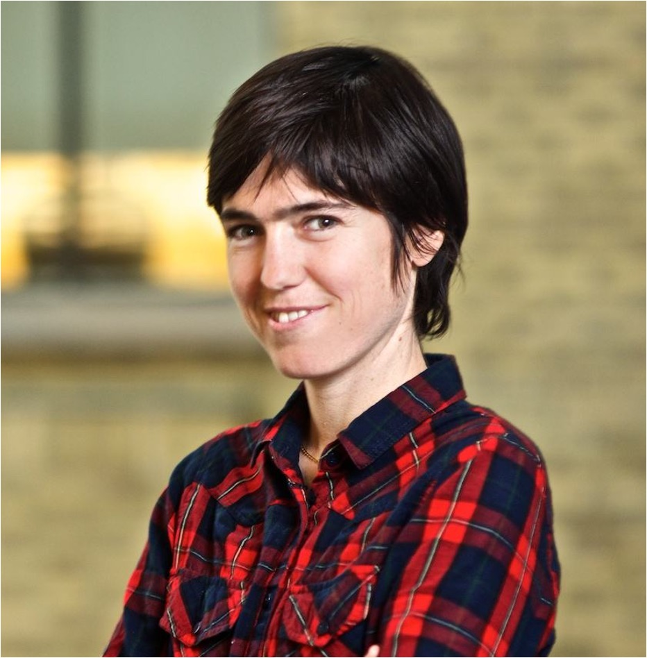

Speakers
 |
 | |
| Zico Kolter Carnegie Mellon University |
Raquel Urtasun University of Toronto/Uber |
David Wagner UC Berkeley |
 |
||
| Alina Oprea Northeastern University |
Aleksander Madry MIT |
Alan Yuille Johns Hopkins University |
| Christopher Ré Stanford University |
Catherine Olsson Open Philanthropy |
Aditi Raghunathan Stanford University |